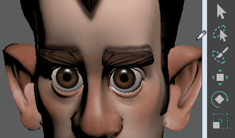
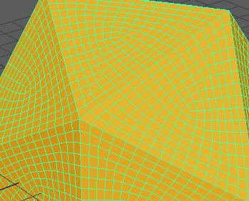

可通过使用绘图板笔在所需组件上绘制来选择组件（例如顶点或面）。

- 选择要选择其上的组件的对象。

在几何体上单击鼠标右键，然后选择组件
- 双击“工具箱”(Toolbox)中的“绘制选择工具”(Paint Selection Tool)
 。
。
- 使用“工具设置”(Tool Settings)面板设置工具，包括笔刷大小以及选择是要选择组件、取消选择组件还是在选定和取消选定之间切换组件。如果使用的是绘图板笔，可以激活“光笔压力”(Stylus Pressure)。
提示： 按住 B 键并拖动可调整笔刷半径大小。
- 设置选择遮罩来选择所需的组件类型。
- 在选定对象上绘制来选择组件。